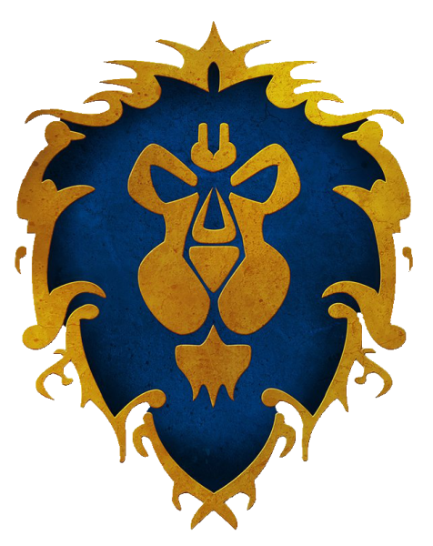

The Alliance is one of two major political factions of the mortal races in Azeroth, its counterpart being the Horde. The Alliance was once also known as the Alliance of Lordaeron when its leadership was centered in Lordaeron.

Information
The humans are the most populous and the youngest race in Azeroth.
The dwarves are a hardy race, hailing from Khaz Modan in the Eastern Kingdoms.
The gnomes are a quirky race, obsessed with gadgets and technology.
The night elves are an ancient and mysterious race.
The Alliance is a great and peaceful body overall, their might being legendary, but their desire for peace, even stronger. Even now, as always, humans are the glue that hold the Alliance together, being the most numerous and diplomatic of the four races.
-Varian Wrynn
Call to action
Sign up and join millions of players
in their fight for Azeroth